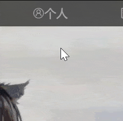
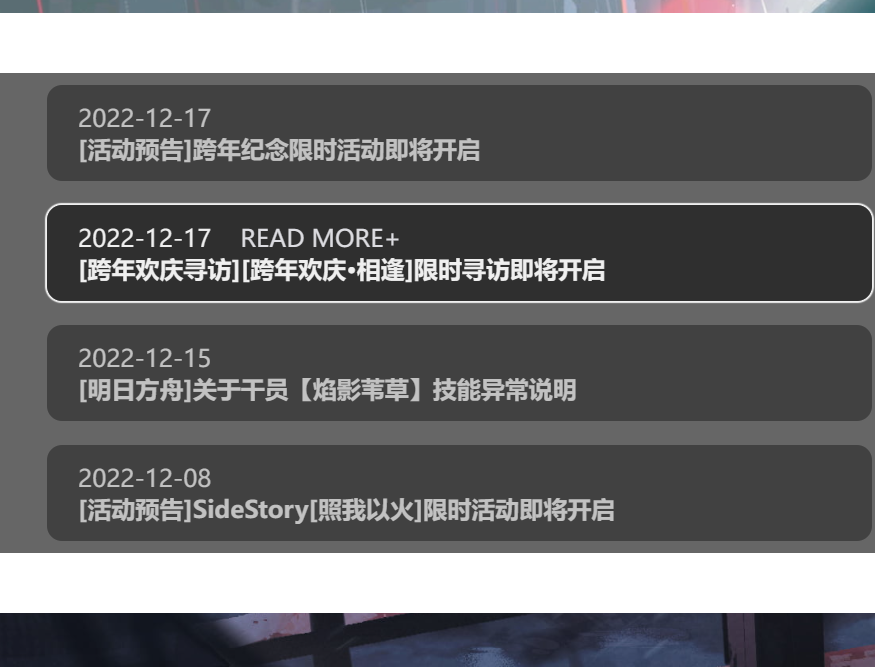
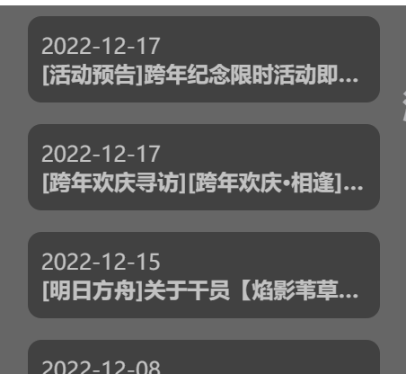
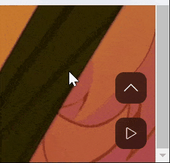
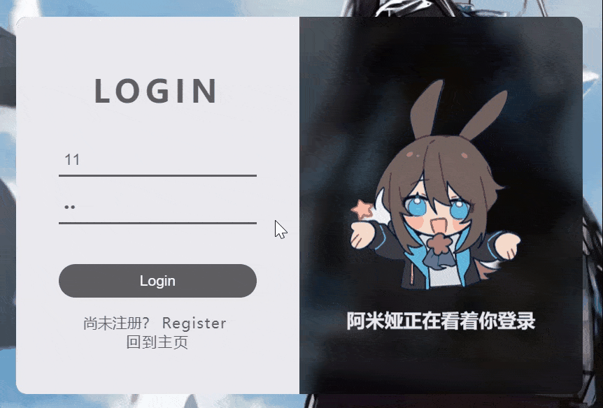
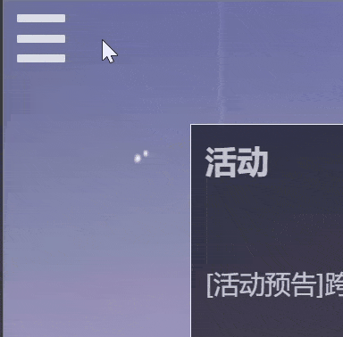
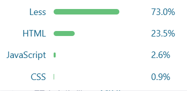
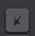

网站设计
耗时七天,主要完成了四个页面,分别是:
首页
: 一个带二级导航的导航栏;主体视差滚动;镂空字;七个内容模块,基本每个模块都有不同的动效;右下角JS实现播放音乐的按钮。

顺滑的滑出,而非使用scaleY而造成画面扭曲,鼠标移到二级菜单时上面的个人颜色也会变化,更加美观,符合直觉。

边框使用盒子阴影而非border，使其过渡更自然，同时一个REDE MORE+提示想更加了解更多请点击。

当盒子长度不够时会用省略号自动隐藏多出来的字。

一个简单的3D翻转。

rotate的运用以及水滴般的阴影质感。

播放音乐以及回到顶部，到达顶部时到达顶部键被隐藏。
登录
: 一个简洁的内容模块,使用JS使点击Register/Login可以在登录与注册间切换；鼠标悬停在Login与Register键时字距增大；磨砂玻璃质感。

干员 :
主页同款导航栏;一个使用表单的内容模块,使用label标签与JS实现切换,点击其侧栏可以切换查看不同干员信息同时切换背景图片;使用过渡色,更加美观。

情报 :
一个伸缩侧栏,使用JS使点击左上角的三条杠可以使其移动为X,优雅;一个使用grid布局的内容模块,内容模块动效没啥新活,简单的阴影加调节透明度。

网站内容
使用Less编写CSS，检查源代码也能发现。

使用阿里妈妈选取不同图标。
使用比特虫制作favicon图标。
使用媒体查询适配移动端
整个网站布局基本都是flex与grid布局
使用了一些JS实现了一些简单功能，如播放音乐、转换style与class。
遇到的问题:
其中卡我最久的问题当属干员中的JS，我当时想把那个界面的所有JS代码用一个for循环完成，最后卡了一下午也没成功，应该是函数没学好，最后只能使用现在使用的JS代码。
其次是主页中的前往报告的rotate死活不转，最后还是看了原作者是怎么写的最后才成功转了起来。
最后是情报中主体使用的grid布局，因为之前我一直都是用flex布局，grid布局完全不会。
开始是我想把行列的间距调为0，查查查都说用grid-gap，然后发现vscode提示中grid-gap是被划掉了的，最后才发现grid布局本来间距就是0，我之前是因为子标签设置的高宽不是100%。
然后新问题就来了，我不知道怎么调整grid布局每行的高，导致我调整浏览器宽是布局总是换行，然后超出我限定的高度，幸好，最后总算找到了怎么解决。
1月9号补充的新问题，报告中补充gif，没想到屏幕局域录制和mp4转化为gif以及gif的压缩这么麻烦，最后用Python，下包，调试，解决。
1月13号补充，新写了一个->主页<-（差点忘了大于小于号要用转义字符）
但和明日方舟主题不搭就没放进来，因为朋友也要用，就没把里面的html、css、js分开弄，好吧我就是懒，不得不说调api是真的爽。
亮点:
响应式适配移动端，使用less，大量使用flex与grid布局，JS实现音乐播放与暂停、界面切换与点击呼出的侧栏，主页视差滚动与镂空字，各种动效，网页整体清爽简洁。
总结
HTML学起来确实快，CSS没什么逻辑，知识点很多，是比较枯燥、容易出错的，但最后效果做出了是非常值得一声夸赞的。
写这次大作业之前我花了许久去观察其他人是怎么写网站的，他们的网站是怎么设计出来的，这个效果要是我，我能怎么做出来。
最后收藏夹多了一大片的视频、网站和工具，也正是这些视频、网站与工具给予了我最后完成这个大作业的灵感。
当我不知道接下来写怎样的东西时，我总会去翻一翻我的收藏夹，去看看别人是怎样想的，最后自己又重新敲上了代码。
哎，当我最后用grid布局写完情报时，不得不感叹如果早点学会grid布局就好了，写之前的网页用flex布局用了太多其实没必要的div，虽说没有一层div定不了的位,如果有,那就两层。
后面应该还会再选web开发的课吧,它所见即所得,早就想去试试“天不生我node.js，全栈万古如长夜”了。